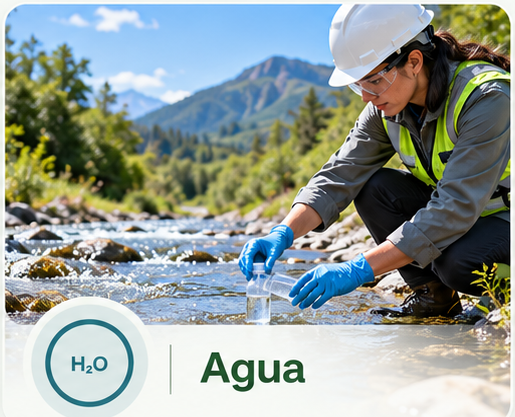
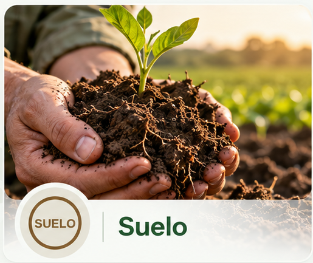
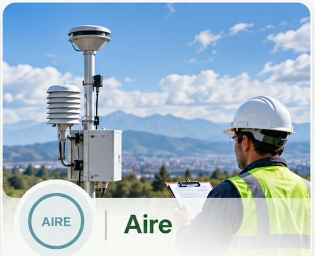
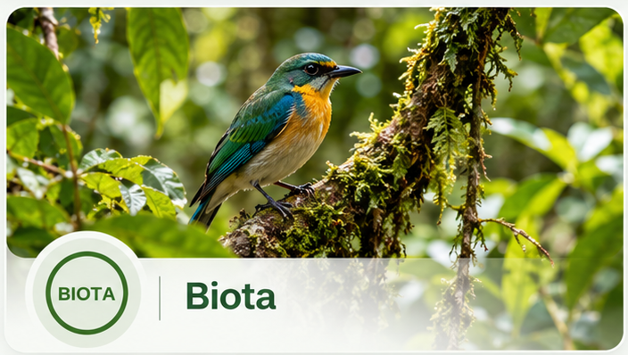
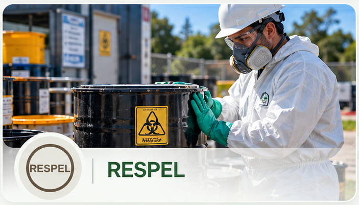

Navega los servicios según el componente ambiental.
Agua, suelo, aire, biota y residuos peligrosos como ejes para identificar necesidades y soluciones.

Agua
Concesiones, vertimientos, PUEAA, ocupación de cauce, caracterizaciones y saneamiento.
La intervención se define de acuerdo con la actividad, ubicación, requerimiento y autoridad competente. El equipo revisa el caso y estructura una ruta técnica y documental proporcional a la necesidad.
Consultar esta matriz
Suelo
Vertimientos al suelo, movimientos de tierra, riesgo ambiental y gestión de impactos.
La intervención se define de acuerdo con la actividad, ubicación, requerimiento y autoridad competente. El equipo revisa el caso y estructura una ruta técnica y documental proporcional a la necesidad.
Consultar esta matriz
Aire
Gestión de emisiones, fuentes fijas, calidad del aire y requerimientos atmosféricos.
La intervención se define de acuerdo con la actividad, ubicación, requerimiento y autoridad competente. El equipo revisa el caso y estructura una ruta técnica y documental proporcional a la necesidad.
Consultar esta matriz
Biota
Flora, fauna, aprovechamiento, compensaciones y evaluación de impactos bióticos.
La intervención se define de acuerdo con la actividad, ubicación, requerimiento y autoridad competente. El equipo revisa el caso y estructura una ruta técnica y documental proporcional a la necesidad.
Consultar esta matriz
RESPEL
PGIRASA, residuos peligrosos, contingencias, segregación, almacenamiento y capacitación.
La intervención se define de acuerdo con la actividad, ubicación, requerimiento y autoridad competente. El equipo revisa el caso y estructura una ruta técnica y documental proporcional a la necesidad.
Consultar esta matriz